General building maintenance and emergency repairs
- Emergency make-safe, boarding up and temporary repairs
- Communal area repairs, locks, closers and ironmongery
- Planned preventative maintenance visits with defect logs

Comprehensive building maintenance, repair and fire door services for managing agents, property managers, landlords and commercial clients across London.
GBS Property Maintenance delivers dependable planned maintenance, reactive repairs and larger project works across residential and commercial property portfolios. The work ranges from a single make-safe visit to programmed cyclical decorations, roofing and access works, and full communal refurbishments. Every job is scoped, priced and reported in the same consistent format.
Our trades cover general building maintenance, electrical and plumbing, bathrooms and kitchens, carpentry and flooring, decorating, roofing and leak investigation, windows, drainage and groundworks, rope and powered access, metalwork and waste removal, with fire doors and firestopping as our specialism. Certification is issued wherever the works require it.
Each instruction receives a written Scope of Works and a priced quotation before works start. RAMS are issued before attendance, access is arranged with your site contact and residents are notified where works affect them.
On completion you receive a Job Report with photographic evidence, the materials used and any further recommendations. Variations are agreed in writing before we proceed, so the invoice matches the instruction.
Our clients are managing agents, property managers, landlords and commercial clients. We are approved contractors for a number of leading managing agents and property management companies, including {{company.approvedForText}}, and work closely with their property management teams to their reporting, approval and access procedures.
New installations and replacement elements where repair is no longer viable: fire doors, ironmongery, joinery, glazing and finishes, supplied and installed to the agreed specification.
Planned, cyclical and reactive maintenance that keeps the building safe and presentable between larger projects, with a record of every visit.
Refurbishment and redecoration that lift the standard of communal areas and void properties, planned around residents and the service charge year.
One instruction route for everything a managed building needs, from an emergency make-safe to a block-wide programme.
Two routes into the same team: a programme that keeps the building ahead of its defects, and a reactive service for everything the programme cannot predict.
A planned programme sets out what is inspected and maintained, how often and at what cost, so the agent and the directors can budget for it. Visits are scheduled in advance, residents are notified and each visit is recorded with photographs.
Reactive instructions are triaged on receipt and given one of four priorities, so that you know what to expect and when. The priority is agreed with you, not imposed, and can be changed if the situation on site changes.
Job Report. Every completed job is closed with a Job Report describing the works carried out, the materials used and any further recommendations.
Photographic evidence. Before, during and after photographs are included, so the report stands on its own for a director, an insurer or an auditor.
Certificates and records. Where certified partners are used, their certificates are attached, and fire door works are recorded on the building's door schedule.
A fire door only performs if it was installed correctly, is maintained and is checked. GBS surveys, repairs, installs and maintains fire door assemblies in residential buildings, and produces the records a responsible person needs to evidence their checks.
Every fire door assembly is surveyed against BS 8214, Approved Document B and the manufacturer's installation instructions. We record what we measure, not only what we see, so that defects can be prioritised and costed from the survey alone.
Where a door can be brought back to a compliant condition, we repair it: seals, closers, hinges, gap adjustment and approved leaf repairs. Where it cannot, we supply and install FD30 or FD60 door assemblies to suit the building's fire strategy.
Remedial works are set out in a schedule mapped to a cost plan, door by door, so you can prioritise by risk and phase the spend across the service charge year.
The Fire Safety (England) Regulations 2022 require the responsible person in a residential building over 11 m to carry out quarterly checks of fire doors in communal areas, and to use best endeavours to check flat entrance doors annually. Our inspection programmes, door schedules and records are written to support those duties and to sit in the building's fire safety file.
Door-by-door inspection with measurements and photographs.
Defect schedule with priority ratings and photographic evidence.
Priced remedial schedule, repair or replace, phased to your budget.
Repairs and installations to specification, with residents notified.
Completion certificate, updated door schedule and records for the fire safety file.
Two kinds of project with one objective: returning a space to the standard it should be at, with a clear specification, a clear price and a clear record.
Refurbishment is planned around the people who use the building. Access is kept open, dust and noise are controlled, and residents receive notices before works start and when the programme changes.
Entrance halls, stairwells and corridors: decoration, flooring, joinery repairs, door and ironmongery replacement and signage, with lighting works through certified partners where certification is required.
Full or partial refurbishment between tenancies: strip-out, repairs, kitchen and bathroom works, decoration and cleaning, handed back ready for the next occupier.
Cyclical external decoration, render and masonry repairs, rainwater goods and fascias, with making good after other trades or damage.
We work directly with loss adjusters, claims handlers and the managing agent on escape-of-water, impact and similar damage claims. The schedule of works is written so that the handler can approve it from the desk, and the invoice breaks down in the same way.
A written specification and a priced Scope of Works, with options where finishes or products can be chosen.
A dated programme with resident notices, access arrangements and a named site contact for the duration.
Snagging walked with you, a Job Report with photographs, and product information and guarantees for the file.
Four commitments that shape how every job is scoped, carried out and closed.
Our teams know how residential blocks are built, managed and occupied, and we scope works accordingly. Advice is practical and given in writing, so you can rely on it when a decision is questioned later.
Works are carried out to the relevant British Standards, the manufacturer's instructions and the agreed specification. We photograph what we find and what we leave, and we do not sign off work we would not stand behind.
The next job is easier when the contractor already knows the building, so we keep records by property: access notes, previous works and outstanding recommendations. We aim to be the contractor you call first, not the one you have to brief from scratch.
Buildings that are maintained last longer, cost less to run and are better places to live. We repair before we replace, specify durable materials and plan works to minimise disruption to residents.
A scope you can approve, a price you can defend and a record you can file.
Approved contractor for leading managing agents and property management companies including {{company.approvedForText}}.
Send us the property address, a short description of the works and any photographs or reports you already hold. We will confirm whether a site visit is needed, then issue a Scope of Works and a quotation for your approval.